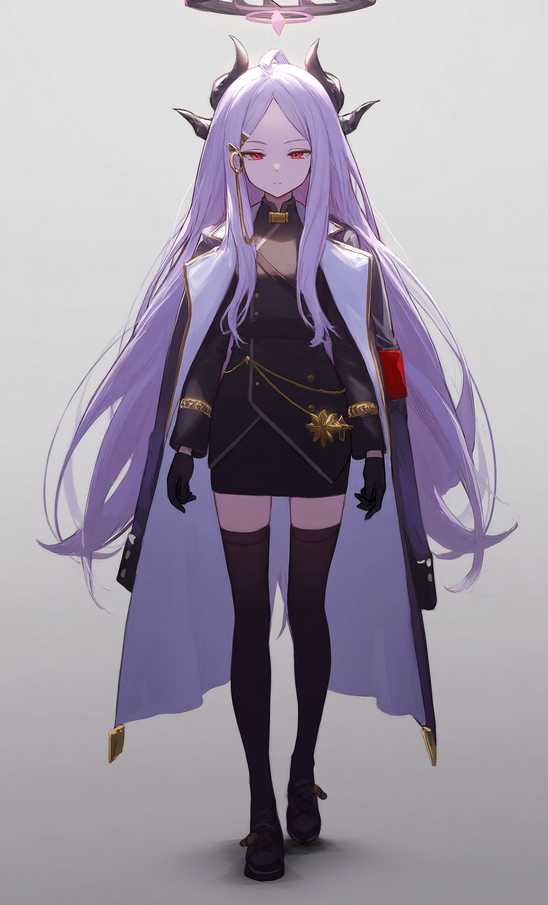
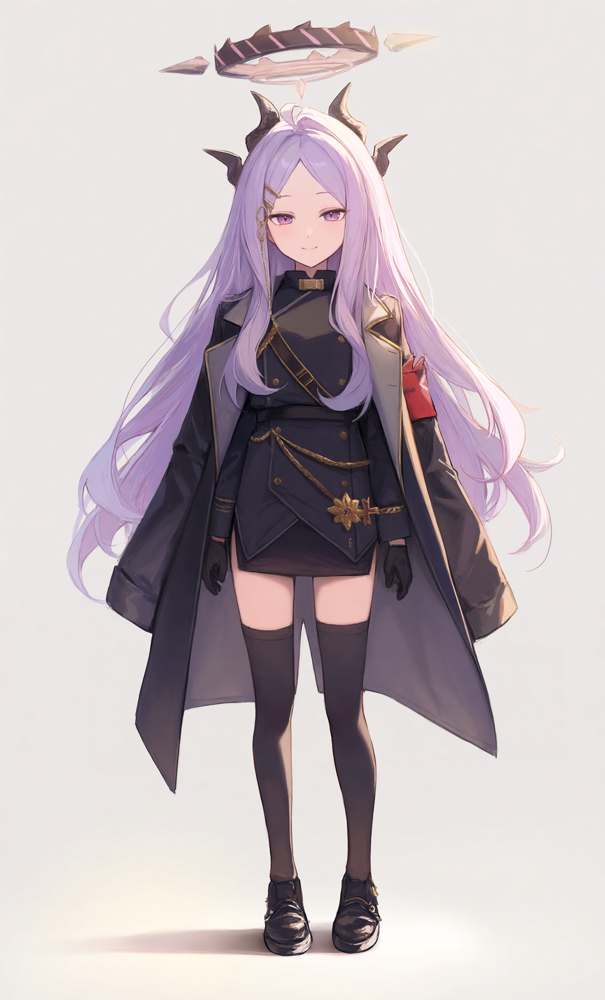
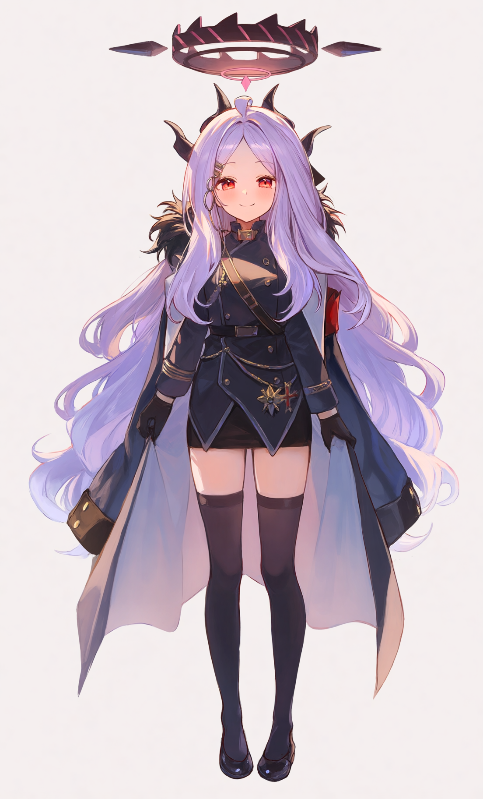
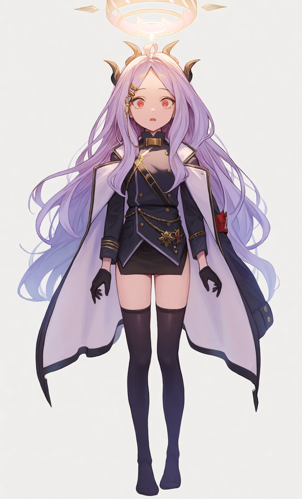
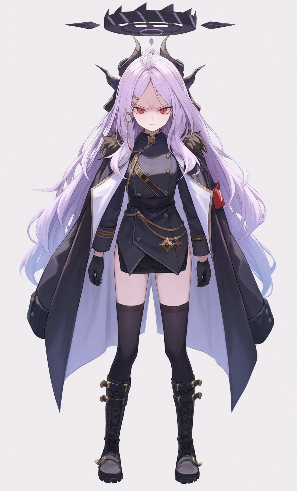

HINA GALGAME / CHARACTER IMAGE REVIEW
陽奈角色圖片檢視
這頁直接讀取 GitHub「to-review」資料夾內的 8 張原始 PNG。點擊圖片可開啟原尺寸檔案。
表情標籤與排列順序完全依照你的指定。棋盤格只是預覽底色，不代表圖片已經去背；目前尚未判定圖片是否適合直接放進遊戲。







這頁直接讀取 GitHub「to-review」資料夾內的 8 張原始 PNG。點擊圖片可開啟原尺寸檔案。
表情標籤與排列順序完全依照你的指定。棋盤格只是預覽底色，不代表圖片已經去背；目前尚未判定圖片是否適合直接放進遊戲。




